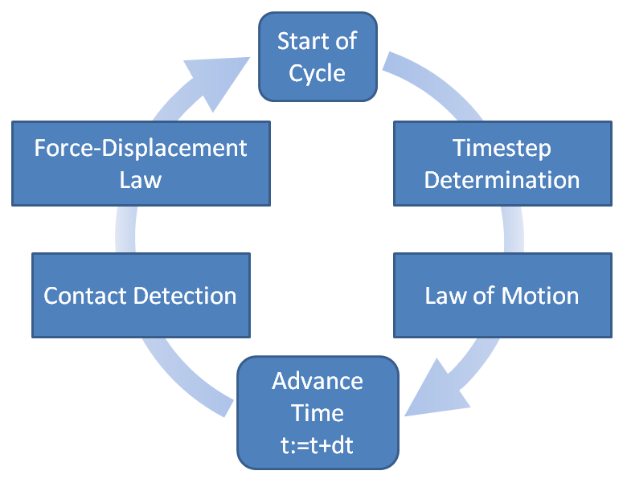

PFC 模型表述
PFC 被归类为离散元程序，因为它允许离散颗粒发生有限的位移和转动（包括完全脱离）， 能在计算推进过程中自动识别新的接触，并采用显式 动力学方法求解牛顿运动定律，从而求得该离散系统的 时间演化。请参阅“PFC 概述（PFC Overview）”一节，以了解对离散元方法（DEM）与 PFC 的 一般性介绍。本节概述了在 PFC 中实现的 DEM 表述，随后深入介绍 PFC 模型组件（Model Components），接着讨论 循环计算（Cycling），最后介绍 PFC 中的能量与耗散机制（Energy and Dissipation Mechanisms in PFC）。
概述
PFC 模型模拟大量颗粒的物理相互作用。PFC 模型中的每个颗粒 都称为体，以明确它并非质点；体是具有有限尺寸和明确表面的 离散刚性体。PFC 模型由体、 部件和接触构成。体有三种类型：球颗粒（balls）、刚性簇（clumps） 和墙（walls）。每个体由一个或多个部件组成。球颗粒由一个部件构成， 该部件就是球颗粒本身；刚性簇由一个或多个子颗粒构成；墙由一个或 多个面片构成。接触是部件之间的成对相互作用，它们在模拟推进过程中 不断产生和消亡。接触保存着施加到相互接触 的体上的力和力矩。这些力/力矩通过称为接触模型（contact models）的相互作用定律计算得到。球颗粒、刚性簇、墙和接触被称为 PFC 模型 组件（model components），因为它们构成了 PFC 模型的物理组成部分。 PFC 模型状态指模拟过程中某一特定时刻模型组件的当前空间构型与状态（例如速度、 力、力矩等）。
作为一种显式的时间步进表述，模型状态随着模拟的推进通过一系列 计算循环（calculation cycles）（即循环）在时间上逐步推进。可以 指定自定义准则，以便根据当前模型状态终止一系列循环。在向终止模型状态循环计算的过程中， 可以观察并查询由大量体的相互作用所产生的丰富 涌现行为；这组行为是 DEM 模拟的 标志性特征之一。
循环序列（cycle sequence）是指在单个 PFC 循环中 执行的操作序列。下图给出了 PFC 中所实现的循环序列的 简化版本。这些操作包括：
- 时步确定（Timestep Determination） - DEM 方法要求一个有效且有限的 时步，以确保模型的数值稳定性，并确保在相互作用的 物体之间出现力/力矩之前，各部件之间的所有接触均已创建。
- 运动定律（Law of Motion） - 每个物体/部件的位置和速度，将利用当前时步以及 上一循环中计算得到的力/力矩，依据牛顿运动定律进行更新。
- 推进时间（Advance Time） - 将当前时步加到先前的模型时间上， 从而推进模型时间。
- 接触检测（Contact Detection） - 接触根据当前的 部件位置动态创建/删除。
- 力-位移定律（Force-Displacement Law） - 每个 接触处产生的力/力矩，由相应的接触模型利用部件的当前状态进行更新。


图 1：每个 循环 期间发生的主要操作序列，称为 循环序列。
为了阐明 PFC 模型的动力学行为，可能需要跟踪能量平衡。 能量耗散可能发生在接触相互作用法则中（例如通过摩擦滑动、 黏性阻尼、塑性等），也可能由称为 局部阻尼 的阻尼机制引起。 局部阻尼可用于加速收敛至稳态解。能量平衡， 包括能量耗散机制，在 PFC 中的能量与耗散机制（Energy and Dissipation Mechanisms in PFC） 一节中讨论。
详细说明
| 这些内容对您有帮助吗？… 版权与免责声明 | FLAC3D © 2019, Itasca | 原文更新于 2020 年 10 月 8 日 |